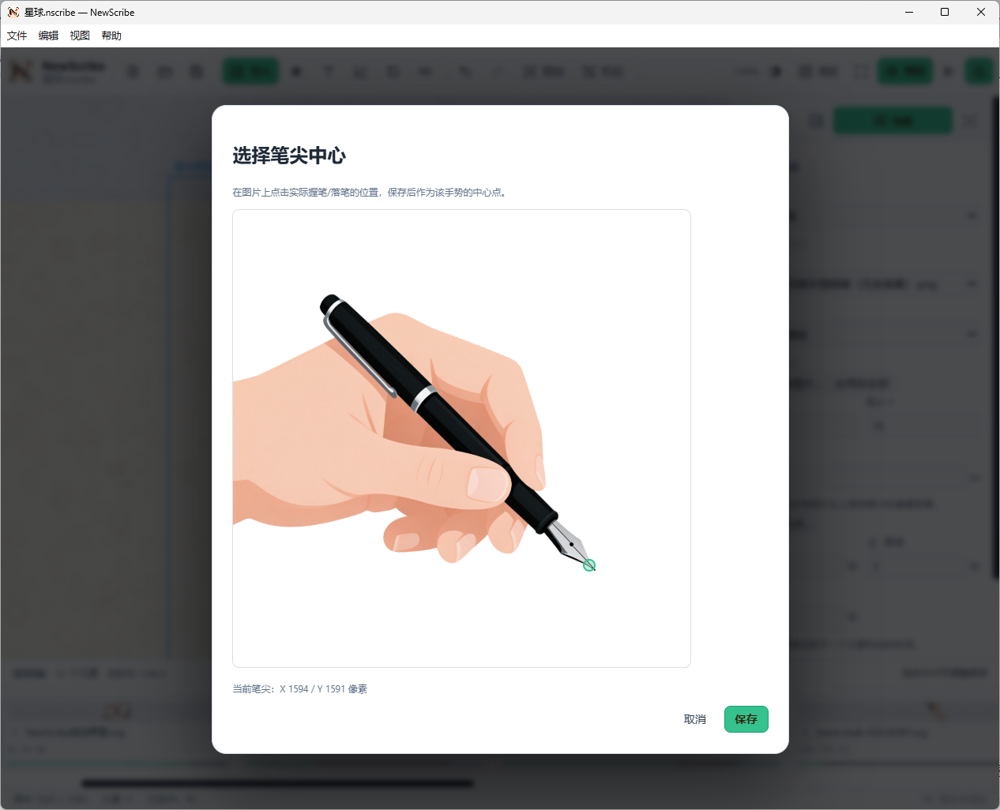
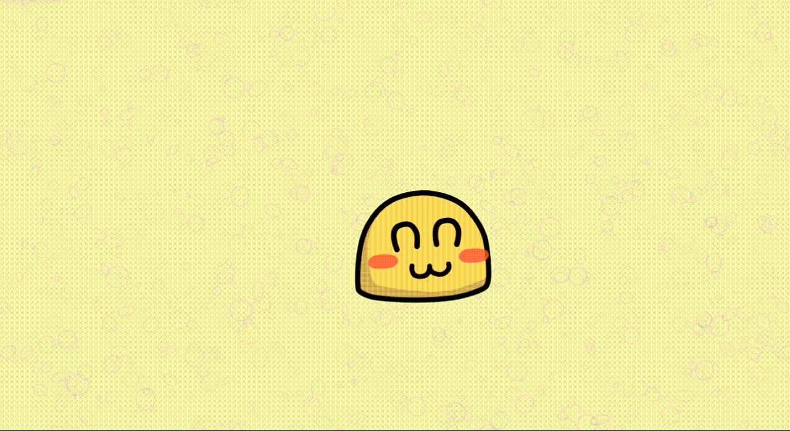
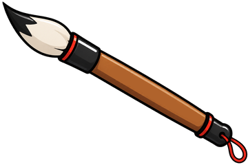

NewScribe 用户帮助
手势与蒙版
内置与自定义手势、笔尖可视化取点，以及三种蒙版作用方式。



 右手默认手势
右手默认手势 马克笔无标志 / 有标志
马克笔无标志 / 有标志 粉笔适合黑板质感
粉笔适合黑板质感 钢笔无标志 / 有标志
钢笔无标志 / 有标志
毛笔无标志 / 有标志10. 手势#
 手势是手绘动画里“让画面看起来像有人在画”的关键。矢量描绘和位图描绘两种动画支持手势。
手势是手绘动画里“让画面看起来像有人在画”的关键。矢量描绘和位图描绘两种动画支持手势。
内置手势#
NewScribe 内置了多种手势，例如右手、马克笔、粉笔、钢笔和毛笔。
下图从左到右是这些默认手势的预览；其中马克笔、钢笔和毛笔还区分有无标志的版本。
可以选择“空白手势”关闭手势显示。
手势大小#
手势大小有两种模式：
- 随
 镜头缩放
镜头缩放 - 固定屏幕大小
“随镜头缩放”会让手势和画面一起变大变小；“固定屏幕大小”则让手势始终保持相对屏幕的视觉大小。
还可以单独设置手势高度。
自定义手势#
可以导入 PNG、JPG 或 WebP 作为自定义手势。
导入后可以：
- 选择笔尖位置
- 可视化取点
- 调整笔尖 X/Y
- 调整手势高度
- 应用到全部描绘元素
“可视化取点”会打开手势 图片，你直接点击实际握笔/落笔的位置，软件会计算笔尖坐标。
图片，你直接点击实际握笔/落笔的位置，软件会计算笔尖坐标。
自定义手势 保存在本机手势库中。保存为
保存在本机手势库中。保存为 .nspkg 时，使用到的自定义手势也会一起打包。
11. 蒙版#
 蒙版用于遮住或挖空某个区域。蒙版形状有矩形和椭圆。蒙版有三种遮挡方式。
蒙版用于遮住或挖空某个区域。蒙版形状有矩形和椭圆。蒙版有三种遮挡方式。
全部元素#
蒙版覆盖所有元素，包括蒙版之前和之后的元素。范围内只显示背景。
适合固定挖空、遮住全部内容。
之前的全部元素#
只遮住蒙版出现之前已经存在的元素。蒙版之后的新元素可以正常画在蒙版上面。
适合擦掉旧内容、保留后续新内容。
特定元素#
只影响选中的目标元素，其他元素完全不受影响。
适合只让某张图片消失、只遮住某个 文字。
文字。
蒙版动画#
蒙版本身也可以设置出现、停留、消失和切换。编辑器显示静态蒙版范围，预览和导出显示动画效果。
进一步说明：手势是表演的一部分#
手势不是装饰，它决定了动画的“表演感”。
同一段矢量描绘，使用不同的手势、手势大小和移动速度，观感会完全不同。手指点得太快，会显得匆忙；手势太大，会遮住内容；手势太小，又失去存在感。
选择手势时，先看内容风格。教学、儿童内容可以用马克笔或粉笔；商务、简洁风格可以用钢笔；传统或艺术题材可以用毛笔。不确定时，右手或钢笔是比较安全的默认选择。
手势大小模式怎么选#
“随镜头缩放”会让手势和画面一起变大变小。镜头拉近时，手势也跟着变大，像真实镜头在拍摄桌面。它适合大多数白板动画。
“固定屏幕大小”会让手势在屏幕上保持相对稳定的大小。无论镜头怎么缩放，手势都不会突然变成巨手。它适合镜头变化较大、需要保持画面干净的项目。
如果手势在镜头拉近时遮住太多内容，可以改用固定屏幕大小，或者降低手势高度。
自定义手势的取点#
自定义手势最重要的是笔尖位置。
如果笔尖偏了，描绘时会出现“手在画，但笔尖不在线上”的错位。使用“可视化取点”，直接在图片上点击实际落笔的位置，比手动输入 X/Y 更可靠。
导入手势图片时，建议使用透明背景的 PNG。JPG 的白色背景会变成手的方形底板，看起来不自然。
手势图片不需要特别大。过大的图片会占用内存，但显示尺寸由手势高度控制。
手势应用范围#
手势可以应用到单个元素，也可以使用“应用到全部”，统一所有描绘元素的手势。
统一手势适合风格一致的项目。不同章节使用不同手势也可以，但要注意不要让观众觉得风格跳变。
蒙版选择哪一种#
蒙版有三种作用方式，选择错误会导致“为什么其他元素也被盖住了”。
如果你希望蒙版范围内的所有内容都消失，包括后面才出现的元素，选择“全部元素”。
如果你只想擦掉已经画好的旧内容，让后续内容继续叠加，选择“之前的全部元素”。
如果你只想让某一个图片或文字消失，不影响周围任何元素，选择“特定元素”。
特定元素蒙版是最安全的“局部消失”方式。它适合做“揭晓”“替换”“隐藏答案”等效果。
蒙版和镜头的关系#
蒙版的位置是在画布世界坐标里定义的，不是固定在屏幕上。
镜头移动时，蒙版会跟着画面一起移动。如果蒙版看起来“跑偏了”，先检查它的位置和机位，而不是只看预览。
蒙版本身也可以设置出现和消失。它的淡入、缩放、移动会改变遮挡范围的动画，而不是改变被遮元素的动画。
蒙版和层级#
蒙版在时间轴中的位置决定了它影响哪些元素。
“之前的全部元素”只影响蒙版之前的元素；“全部元素”会影响它之后的新元素。调整蒙版在时间轴中的位置，可能会改变最终效果。
如果蒙版没有按预期遮住内容，先检查它在时间轴里的顺序。
常见蒙版误用#
用“全部元素”蒙版去遮一个特定图片，结果把周围元素也盖住了。应该改用“特定元素”。
用“特定元素”蒙版去擦除已经画好的旧内容，结果只擦掉了目标元素，旧内容还在。应该改用“之前的全部元素”。
把蒙版做得太大，覆盖了输出框外的大量区域。虽然不一定出错，但会增加渲染负担，也不利于精确控制。
蒙版淡入的预览#
编辑页面显示的是静态蒙版范围；真正的淡入、缩放、移动要在预览和导出中看。
如果预览中蒙版效果和编辑页面不一致，先确认当前时间点是否在蒙版的动画区间内，再检查蒙版的出现、停留和消失设置。